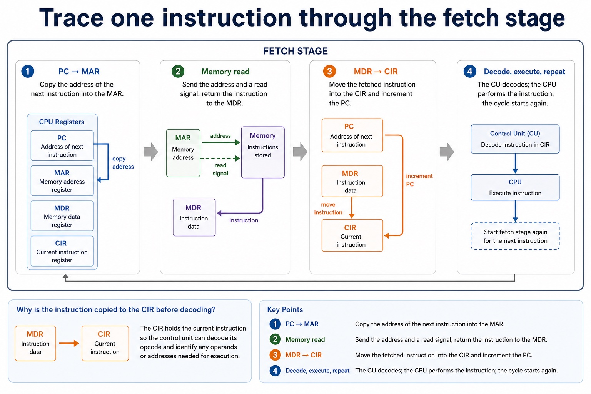
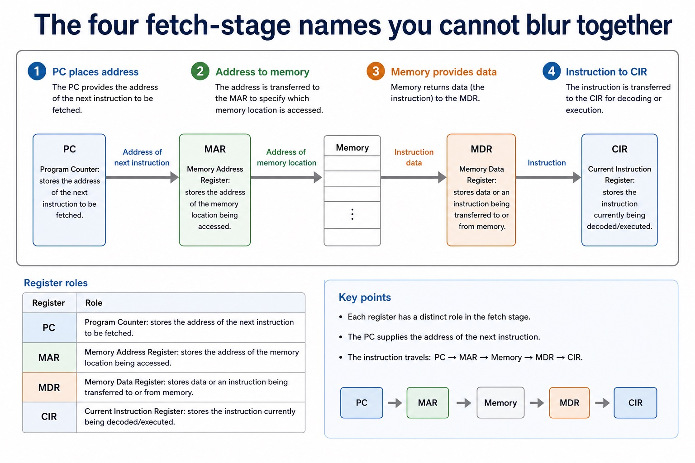

The CPU follows a routine. It is not improvising jazz with your instructions.
The fetch-decode-execute cycle is the repeated process used by a CPU to
obtain an instruction from memory, interpret it, and carry it out.
Cambridge questions often test the exact register sequence, not just the
three headline words.
Tracethe fetch stage using PC, MAR, MDR and CIR
Explainwhat decode and execute do in the cycle
Correctcommon sequence and register-role errors
FETCHDECODEEXECUTE
Repeat until the program stops, an interrupt is handled, or something has gone very exam-question-shaped.
Why this matters
Marks are often awarded for the correct register and the correct action. A correct name with the wrong job is not enough.
Common trap
Students write "PC stores the instruction". It does not. The PC stores the address of the next instruction.
Warm-up hook
A CPU wants the next instruction. Where does it look first?
Click the best answer. The PC is not dramatic; it simply points to the next instruction like a very serious bookmark.
Click one. The first fetch question is usually about where the address comes from.
Knowledge point 1
The cycle in one clean sentence
FetchThe CPU gets the next instruction from main memory using the address stored in the PC.DecodeThe CU interprets the instruction in the CIR and identifies the operation and any operands needed.ExecuteThe CPU carries out the instruction, for example using the ALU, accessing memory, or changing the PC.
The cycle in one clean sentence: source-grounded visual explanation.
Lesson fact: The CPU gets the next instruction from main memory using the address stored in the PC.
Lesson fact: The CU interprets the instruction in the CIR and identifies the operation and any operands needed.
Lesson fact: The CPU carries out the instruction, for example using the ALU, accessing memory, or changing the PC.
Visual explanation
Trace one instruction through the fetch stage
Read left to right. The labels name what is held or transferred, so the register names are tied to a job rather than memorised as a list.
1. PC → MARCopy the address of the next instruction into the MAR.
2. Memory readSend the address and a read signal; return the instruction to the MDR.
3. MDR → CIRMove the fetched instruction into the CIR and increment the PC.
4. Decode, execute, repeatThe CU decodes; the CPU performs the instruction; the cycle starts again.
Check the diagram: why is the instruction copied to the CIR before decoding?
The CIR holds the current instruction so the control unit can decode its opcode and identify any operands or addresses needed for execution.
Trace one instruction through the fetch stage

Trace one instruction through the fetch stage: source-grounded visual explanation.
Lesson fact: Visual explanation
Lesson fact: Read left to right. The labels name what is held or transferred, so the register names are tied to a job rather than memorised as a list.
Lesson fact: 1. PC → MAR Copy the address of the next instruction into the MAR.
Lesson fact: 2. Memory read Send the address and a read signal; return the instruction to the MDR.
Lesson fact: 3. MDR → CIR Move the fetched instruction into the CIR and increment the PC.
Lesson fact: 4. Decode, execute, repeat The CU decodes; the CPU performs the instruction; the cycle starts again.
Lesson fact: Check the diagram: why is the instruction copied to the CIR before decoding?
Lesson fact: The CIR holds the current instruction so the control unit can decode its opcode and identify any operands or addresses needed for execution.
Knowledge point 2
Fetch stage: the register sequence
This is the part students must be able to trace precisely.
Step
Action
Register / bus focus
Exam-safe wording
1
Address copied from PC to MAR.
PC -> MAR
The PC contains the address of the next instruction; this address is copied to the MAR.
2
Address sent to memory.
Address bus
The address in the MAR is placed on the address bus.
3
Memory read signal is sent.
Control bus
The CU sends a read signal on the control bus.
4
Instruction is returned to CPU.
Data bus -> MDR
The instruction from memory is transferred on the data bus to the MDR.
5
Instruction copied into CIR.
MDR -> CIR
The instruction is copied from the MDR to the CIR for decoding.
6
PC updated.
PC increment
The PC is incremented so it points to the next instruction, unless the instruction changes the sequence.
Fetch stage: the register sequence
Fetch stage: the register sequence: source-grounded visual explanation.
Lesson fact: This is the part students must be able to trace precisely.
Lesson fact: Register / bus focus
Lesson fact: Exam-safe wording
Lesson fact: Address copied from PC to MAR.
Lesson fact: PC -> MAR
Lesson fact: The PC contains the address of the next instruction; this address is copied to the MAR.
Lesson fact: Address sent to memory.
Lesson fact: Address bus
Lesson fact: The address in the MAR is placed on the address bus.
Lesson fact: Memory read signal is sent.
Lesson fact: Control bus
Lesson fact: The CU sends a read signal on the control bus.
Knowledge point 3
Decode and execute are not filler words
Decode
The control unit interprets the instruction in the CIR. It identifies the opcode, decides what operation is required, and identifies any operands or addresses needed.
Execute: arithmetic or logic
If the instruction is arithmetic or logical, the ALU performs the operation and a result may be stored in a register.
Execute: memory access
If the instruction needs data from memory, the CPU uses buses and registers to read from or write to the required memory address.
Execute: branch
If the instruction is a branch/jump, the PC may be changed to a different address rather than just continuing with the next instruction.
Common trap
"Execute" does not always mean "ALU does maths". Some instructions move data, access memory or change the PC.
Decode and execute are not filler words
Decode and execute are not filler words: source-grounded visual explanation.
Lesson fact: The control unit interprets the instruction in the CIR. It identifies the opcode, decides what operation is required, and identifies any operands or addresses needed.
Lesson fact: Execute: arithmetic or logic
Lesson fact: If the instruction is arithmetic or logical, the ALU performs the operation and a result may be stored in a register.
Lesson fact: Execute: memory access
Lesson fact: If the instruction needs data from memory, the CPU uses buses and registers to read from or write to the required memory address.
Lesson fact: Execute: branch
Lesson fact: If the instruction is a branch/jump, the PC may be changed to a different address rather than just continuing with the next instruction.
Lesson fact: Common trap
Lesson fact: "Execute" does not always mean "ALU does maths". Some instructions move data, access memory or change the PC.
Register roles
The four fetch-stage names you cannot blur together
PCProgram Counter: stores the address of the next instruction to be fetched.MARMemory Address Register: stores the address of the memory location being accessed.MDRMemory Data Register: stores data or an instruction being transferred to or from memory.CIRCurrent Instruction Register: stores the instruction currently being decoded/executed.
The four fetch-stage names you cannot blur together

The four fetch-stage names you cannot blur together: source-grounded visual explanation.
Lesson fact: Register roles
Lesson fact: PC Program Counter: stores the address of the next instruction to be fetched.
Lesson fact: MAR Memory Address Register: stores the address of the memory location being accessed.
Lesson fact: MDR Memory Data Register: stores data or an instruction being transferred to or from memory.
Lesson fact: CIR Current Instruction Register: stores the instruction currently being decoded/executed.
Interactive tool
Fetch stage sequencer
Select a step and check what moves, where it moves, and which register or bus matters.
Worked examples
Trace the mechanism, not just the slogan
5-minute quiz
Practice with instant checking
Short answers are fine; vague answers are not. A register name without a role is just alphabet soup.
Mistake debugging
Fix the sequence
Exam-style questions
CIE-style questions with expandable mark schemes
These are original Cambridge-style questions. MS wording is strict about register roles and sequence.
Summary
Fetch, decode, execute, repeat
FetchUse PC address to get the instruction from memory into the CIR.
DecodeThe CU interprets the instruction and identifies operation/operands.
ExecuteThe CPU carries out the operation, possibly using ALU, memory or PC changes.
PCHolds the address of the next instruction.
MAR/MDRMAR holds address; MDR holds transferred data or instruction.
CIRHolds the current instruction for decoding/execution.
Homework
Make the cycle sequence exam-ready
Write the fetch stage as six numbered steps using PC, MAR, MDR, CIR, address bus, data bus and control bus.
Answer a 5-mark question: "Describe the fetch stage of the fetch-decode-execute cycle."
Create a two-column table comparing PC, MAR, MDR and CIR. One column must state what each register holds.
Write two execute-stage examples: one ALU instruction and one branch instruction.
Correct this sentence: "The PC stores the instruction and sends it to the CIR."